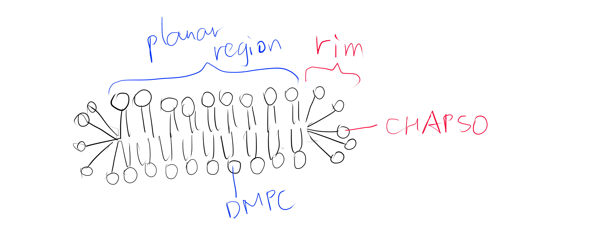
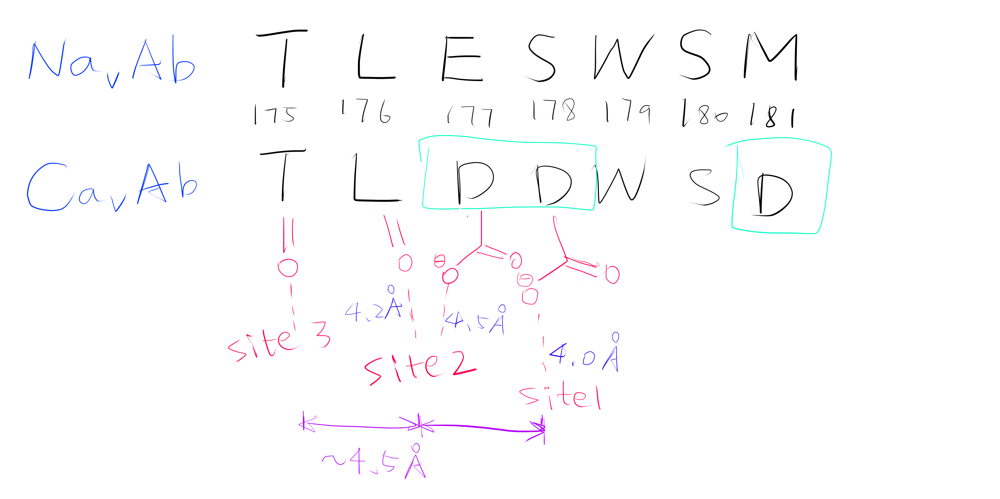
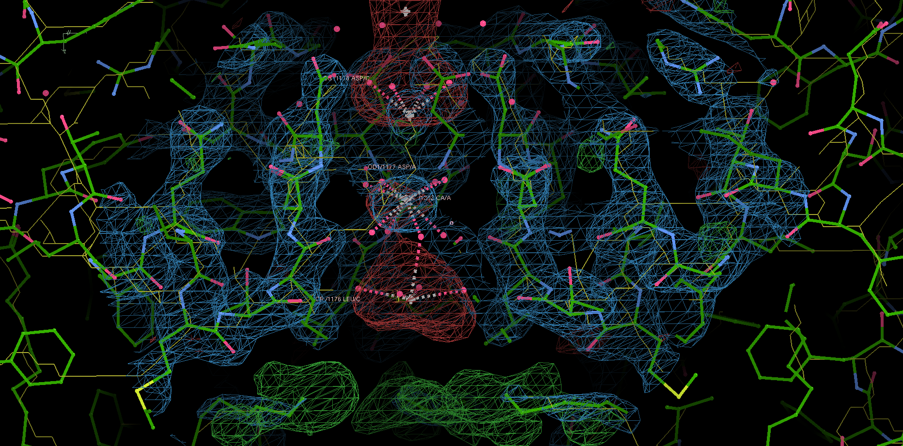
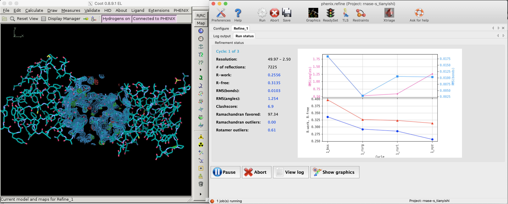
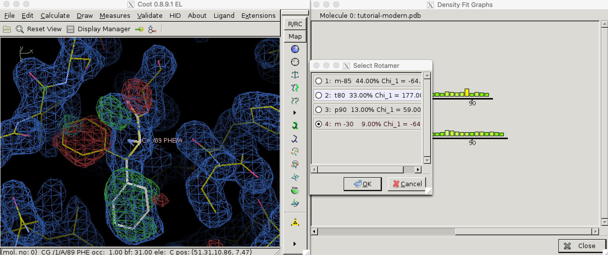
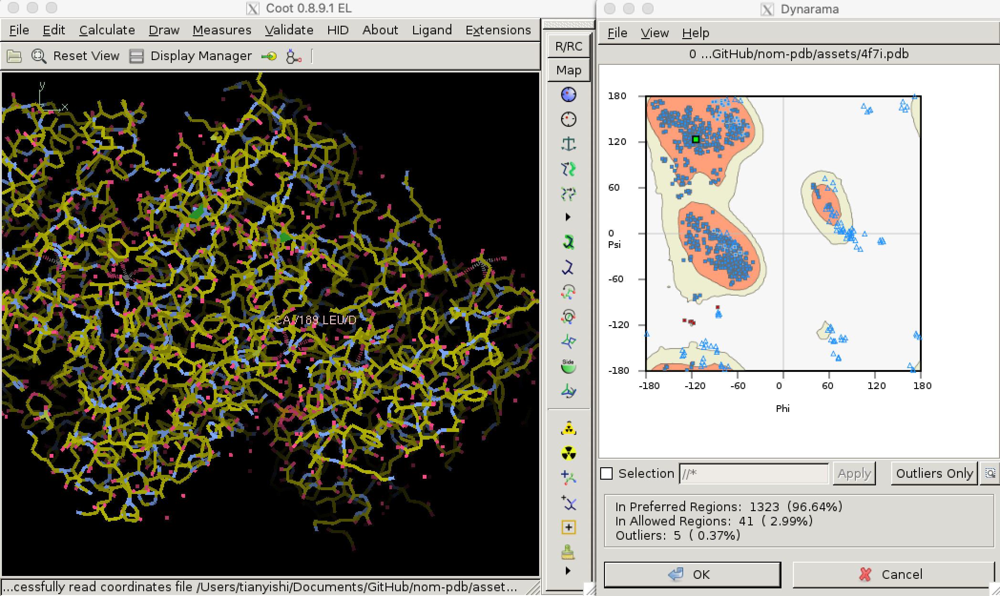

2020
Introduction
The Ca2+ selectivity of voltage-gated calcium (Cav) channels remained unclear. They were thought to use a ‘knock-off’ methanism which requires multiple ion-binding cores, but mutational analyses supported a single high-affinity Ca2+ binding site. This paradox is explained by the mechanism proposed in this article, based on the crystal structures of CavAb channels.
Methods
In this study, the authors created several mutants of bacterial Nav channel NavAb by site directed mutagenesis using QuickChange at the selectivity filter region1. Some of these mutations changes the activity of the channel from allowing efflux of Na+ to allowing influx of Ca2+ to different extents (quantified by the relative permeability of Ca2+ against Na+). Baculovirus were used as the vector to infect Trichopulsia ni cells. Proteins were collected from insect cells, purified, concentrated to ~20mg ml-1, and reconstituted into DMPC:CHAPSO bicelles (Figure 1). Crystals were grown in a hanging-drop vapour-diffusion format.

Figure 1: The DMPC:CHAPSO bicelle. Bicelles are disks with a planar region formed by long chain lipid phospholipids and a rim composed of short chain phospholipids or detergent molecules. It provides an environment that resembles a lipid bilayer where membrane proteins’ natively resides. Membrane proteins can be incorporated into bicelles for functional studies as well as crystallisation.
Before X-ray diffraction data collection, crystals were soaked with cryo-protectant solutions containing Ca2+, Mn2+ or Cd2+ of indicated concentrations. These ions travel through solvent channels within the crystals and chelate with amino acid residues in the selectivity filter region.
X-ray diffraction data were integrated and scaled with the HKL2000 packaged and further processed with the CCP4 package. THe structure of CavAb and its derivatives were solved by molecular replacement by using an individual subunit of the NavAb structure (PDB code 3RVY) as the search template. This choice is natural since the proteins used in this study are derived from NavAb and differ from it by no more than 3 amino acid residues.
The divalent cations were identified by anomalous difference Fourier maps calculated using data collected at wavelengths of 1.75 Å for Ca2+, Cd2+ and Mn2+. Anomalous scattering describes cases where a pair of structure factors \(\mathbf{F}_{hkl}\) and \(\mathbf{F}_{\overline{hkl}}\) does not obey Friedel’s law2, which occurs when the incident X-ray photons have an energy close to a transition energy of the diffracting atom, resulting in absorption of radiation energy and change in phase (normal scattering does not change the phase). At the wavelengths convinient for diffraction, only atoms heavier than phosphorus or sulfur behave as anomalous scatterers. While anomalous scattering data are frequently used to solve the phase problem (in techniques known as single/multiple wavelength anomalous dispersion (SAD/MAD)), it can also be used (as in this study) to calculate an anomalous difference map after phases are available to show the locations of the heavy atoms.3
Crystallography and NMR System software was used for refinement of coordinates and B-factors. Final models were obtained after several cycle refinement with REFMAC and PHENIX and manual re-building using COOT. The geometries of the final structural models of CavAb and its derivatives were verified using PROCHECK.
13 crystal structures of 5 proteins (NavAb and 4 CavAb variants) with the following divalent cation concentrations were determined and deposited into PDB:4
- TLESWSM (NavAb) + Ca2+ 15mM
- (TLEDWSM, TLEDESD, TLDDWSM) + Ca2+ 15mM
- TLDDWSD + (Ca2+ 15mM; Mn2+ 100mM; Cd2+ 100mM)
- TLDDWSN + Ca2+ (0.5, 2.5, 5, 10, 15mM)
Of the 13 crystal structure models, 4MVR (175TLDDWSD181) corresponds to the protein with the greatest permeability ratio PCa:PNa , while 4MS2 (175TLDDWSN181) diffracted to the highest resolution (2.75 Å).
Analyses of Results
Ca2+ Binding Sites
Using the anomalous diffraction data, the F+Ca - F-Ca anomalous difference map was calculated. Two strong peaks followed by a weaker peak were found along the ion-conduction pathway, which correspond to the three Ca2+ binding sites. They are designated site 1, 2 and 3 from the extracellular side to the intracellular side.
Site 2 is the site with the highest affinity for Ca2+. It is surrounded by a total of 8 oxygen atoms, 4 of which coming from the carboxylate of D177 above and the other 4 from the carbonyl of L176 below. Site 1 is coordinated by the plane of 4 carboxyl groups from D178, and site 3 by the plane of 4 carbonyls from T175 (Figure 2). Throughout the selectivity filter, the O-Ca2+ coordination distances are in the range of 4.0-5.0 Å, which is much longer than the ionic diameter of Ca2+ (2.28 Å), suggesting that the bound Ca2+ ion maintains its hydration shell while passing through the pore. Site 3 has the lowest affinity, consistent with its role in exit of Ca2+ from the selectivity filter into the central cavity. Figure 3 shows the molecular model and electron density near the selectivity fileter region of CavAb (TLDDWSN + 15mM Ca2+) in COOT5 (contoured at r.m.s.d = \(3.02 \sigma\)).

Figure 2: A schemetic showing the Ca2+ ion coordination sites of CavAb (TLDDWSD)

Figure 3: The selectivity filter region of 4MS2.
The relative affinities of the three sites were further confirmed by experiments on CavAb (TLDDWSN) with varying Ca2+ concentrations (0.5, 2.5, 5, 10, 15mM): at low Ca2+ concentration, two strong peaks of approximately equal intensity are found at Site 1 and Site 2; at high concentration the electron density is significantly enhanced in Site 2 and decreased in Site 1. The electron density at Site 3 remains low in all concentrations.
Ion-Permeation Mechanism
Based on the properties of the three coordination sites, an ion-permeation mechanism can be deduced. The three coordination sites are separated by a distance of about 4.5 Å, which makes it energetically unfavourable for Ca2+ to occupy adjacent sites simutaneously. Thus the authors suggested that the selectivity filter oscillates between two states, in which either a single hydrated Ca2+ occupies Site 2, or two of them each occupies Site 1 and Site 3. The entry of Ca2+ into Site 1 is promoted by it high extracellular concentration, and the exit of Ca2+ is facilitated by the low affinity of Site 3.
Notably, this mechanism suggests that Ca2+ ions are kept hydrated during its passage through the selectivity filter. This is very different from the mechanism by which potassium channels achive selectivity, which requires K+ ions’ hydration shell to be removed.
Roles of Key Selectivity Filter Residues
The five variants of CavAb the author produced have different Ca2+ selectivity ratios, which can be partially explained by directly comparing the difference in the arrangement of selectivity filter residues. This comparison is sometimes facilitated by superposition of one structure onto another. For example, the carboxyl group of D177 in TLDDWSD interacts with the Ca2+ ion, while the carboxyl group of E177 in TLEDWSD swings away from the selectivity filter and forms a hydrogen bond with D181 and the main-chain nitrogen atoms of S180.
specifically, from 175TLESWSM181 to TLDDWSD, TLDDWSN, TLDDWSM, TLEDWSM, TLEDWSD and TLDSWSM↩︎
Friedel’s law states that \(\mathbf{F}_{hkl}\) and \(\mathbf{F}_{\overline{hkl}}\) have the same amplitude but opposite phase angle.↩︎
This map is automatically calculated in phenix.refine.↩︎
namely 4MS2, 4MTO, 4MTF, 4MTG, 4MVU, 4MW8, 4MVZ, 4MVM, 4MVO, 4MVQ, 4MW3, 4MVS, 4MVR↩︎
COOT version 0.9.1 (packaged with CCP4), on Linux version 5.8.16-2-MANJARO↩︎
A high-quality protein structure model explains the experimental observations well, and conforms to physical and biochemical principles. There are some parameters indicating the quality of a structure model. Some of them are used during model building and refinement, while others apply only on a refined structure.
1 The Essence of X-Ray Crystallography
The intensity at \((h, k, l)\) in the reciprocal space, i.e. the structure factor amplitudes collected in X-ray experiments is directly related to the Fourier transform of the electron density in the real space (\(I = \mathbf{F}_{hkl}^2\)), the latter being calculated as:
\[\begin{equation} \mathbf{F}_{hkl} = \int_{x}\int_{y}\int_{z}\rho(x, y, z)e^{2\pi i(hx +ky + lz) }\mathrm{d}x \mathrm{d}y \mathrm{d}z \end{equation}\]
In practice, since the number of atoms and reflections (hence \((x, y, z)\) or \((h, k, l)\) coordinates is limited, its discrete form, which can be efficiently computed, is used:1
\[\begin{equation} \mathbf{F}_{hkl} = \sum_{j}^{n}f_j e^{2\pi i(hx_j +ky_j + lz_j) } \end{equation}\]
where \((x_j, y_j, z_j)\) is the coordinates of the j-th atom in real space.
This is also known as the structure factor equation.
Solving the electron density from structure factors involves solving the inverse Fourier transform of the above equation, also known as the electron density equation, in its discrete form:
\[\begin{equation} \rho(x, y, z) = \dfrac{1}{V}\sum_{h}\sum_{k}\sum_{l}w_{hkl}|\mathbf{F}_\text{obs}|e^{-2\pi i(hx + ky + lz - \alpha^\prime_{hkl})} \end{equation}\]
where \(\alpha^\prime_{hkl}\) is the phase at each set of coordinates in the reciprocal space. The phases are not directly available but are necessary (actually more important than intensities) for computing \(\rho(x,y,z)\) (electron density).
The phases can be solved either by phasing experiments, in which case the resolution is relatively low but the data is unbiased, or by molecular replacement (MR), in which case the resolution is relatively high but the data suffer from bias (the phases resemble the search model more than the actual structure). Thus, bias minimisation measures such as maxinum likelihood map coefficients are applied before electron density map contrstruction.
2 Assessing the Quality of A Structure During Model Building and Refinement
Solving the electron density and ultimately the atomic structure from experimental data is an iterative process, starting from a model with low resolution and imperfect phases and progressively refining the model by applying prior knowledge on the information the current model can provide so far.
In general, the first step in refinement is to construct a crude electron density map (Equation (3)) using phase angles (\(\alpha^\prime\)) obtained either from MR or experimental phasing. This initial map, F0, is improved using techniques such as density modification, solvent leveling, solvent flattening. At some critical point in the iterative improvement of phases, the map becomes clear enough that a protein chain can be traced through it. From this point on, real-space refinement is also conducted at each round of iteration. Electron density map is obtained (details in Section 2.3), and filled with atoms, and transformed back to the reciprocal space. This process repeats until converging to a high-quality strucure. \(R\) and \(R_\text{free}\), explained below, are used to assess progress in the refinement, and is also a major factor in evaluating the quality of a model.
2.1 R and Rfree
R is a measure of the deviation of calculated intensities from models (details in Section 2.2) from the observed intensities in the diffraction pattern, defined by the following equation:
\[ R = \dfrac{\sum ||\mathbf{F}_\text{obs}| - |\mathbf{F}_\text{calc}||}{\mathbf{F}_\text{obs}} \]
Since bias can easily be introduced into the R value (especially by overparameterisation, see Section 2.2) and a reduction of R value sometimes does not improve the actual quality of structure (Kleywegt and Brünger (n.d.)), a small fraction (typically around 5%2) of randomly selected reflections are removed from the data used for refinement. These reflections can then be used to calculate an R factor, denoted as \(R_\text{free}\), whose reduction can be considered as an unbiased estimate of the improvement of the model.

Figure 2.1: R and R-free values decreases as refinement proceeds (left: Coot; right: phenix.refine).
Figure 2.1 shows the decrease of R and Rfree during a refinement task conducted in Phenix.
2.2 Reciprocal-Space Refinement: Refinement by least squares
Reciprocal-space refinement involves computerised attempts to improve agreement between \(\mathbf{F}_\text{obs}\) and \(\mathbf{F}_\text{calc}\) by without consideration of the maps and models. Refinement by least squares is the earliest successful technique and is discussed here.3
The goal of refinement by least squares is, find \((x_j, y_j, z_j)\) for all atom \(j\) whose expected ( i.e. computed) structure factor amplitudes, \(|\mathbf{F}_\text{calc}|\) are as close as possible to observed structure factor amplitudes, \(|\mathbf{F}_\text{obs}|\). Specifically, this means minimising the function \(\Phi\):
\[\begin{equation} \Phi = \sum_{hkl}(w_{hkl}\mid\mathbf{F}_\text{obs}\mid - \mid\mathbf{F}_\text{calc}\mid)_{hkl}^{2} \end{equation}\]
where \(w_{hkl}\) is the weight term that depends on the reliability of the corresponding measured intensity and \(|\mathbf{F}_\text{calc}|\) is a variant form of Equation (2) that can include additional parameters such as B-factor (\(B_j\)) and occupancy \(n_j\). An equation with \(B_j\) and \(n_j\) included can be written as:
\[\begin{equation} \mathbf{F}_\text{calc} = \sum_{j}n_j f_j e^{2\pi i(hx_j +ky_j + lz_j) - B_j[(\sin\theta)/\lambda]^2} \end{equation}\]
Note that the equatin shows that the effect of B-factors depends on the angle of reflection \((\sin\theta)/\lambda\).
Solving the minimum of \(\Phi\) analytically is impractical, and instead numerical methods are used, which would lead to a minimum closest to the starting value.To prevent the refinement converging to a local minimum, it is important that the starting parameters be near the global minimum. Is also important not to include too many parameters (such as B-factor) at the initial stages of resolution when the resolution is low, as this would decrease the radius of convergence (Figure 2.2).

Figure 2.2: Adding number of parameters improves precision of refinement, but makes it more unlikely to reach the global minimum from a given point. Thus, refinement starts with a small number of parameters, and more parameters are only added after the success of previous lower-resolution refinement steps.
To minimise the number of parameters used during early stages of refinement (and thus to increase radius of convergence), individual \((x,y,z)\) coordinates are actually not used. Instead, only torional angles \(\psi\) and \(\phi\) are allowed to change, and all bond lengths and angles are fixed to their theoretical average, side chains are assumed to be in their preferred conformation, and peptide linkages are fixed to be planar. This strategy is known as restrained reciprocal space refinement. As refinement proceeds, more parameters, from individual \((x,y,z)\) coordinates to isotropic B-factors and finally anisotropic factors, can be added into calculation.
2.3 Real-Space Refinement: Map Fitting
Map fitting or model building entails building a molecular model that fits realistically into the current electron density contour map.
To reduce the bias (towards Fcalc (Fc)) when constructing the electron density map, Fourier syntheses of Fobs and Fcalc are used. A Fourier synthesis mFo - nFc is calculated as:
\[ \rho(x, y, z) = \dfrac{1}{V}\sum_{h}\sum_{k}\sum_{l}(m|\mathbf{F}_\text{o}|-|\mathbf{F}_\text{c}|)e^{-2\pi i(hx + ky + lz - \alpha^\prime_{hkl})} \]
and its corresponding electron density map is called an mFo - nFc map.
Simply put, the 2Fo - Fc map resembles a molecular surface, and a Fo - Fc map emphasises the error (positive density implies that the unit cell contains more electron density in this region than implied by the model (Fc). Near the end of refinement, the Fo - Fc map becomes rather empty except in problem areas, which may need to be corrected manually.
Fitting a molecular model into the electron density map depends on prior knowledge, such as average bond lengths and angles, the amino acid sequence of the protein, properties of peptide chains, etc. For example, we know that carboxyl oxygens in adjacent amino acid residues in a \(\beta\)-sheet point in opposite directions. Thus, once a \(\beta\)-sheet along with one or two carboxyl oxygen are discernible, we can make a sensible guess of the positions of all other carbonyl oxygens.
3 Assessing Quality After Automatic Model Building and Refinement
3.1 Density fit analysis and local geometry validation
Automatic model building and refinement use the decrease of R value as an indicator of progress and terminates when R is considered to be sufficiently low. This may lead to situations where the global R is favourable but local geometry can still be improved.
Local geometry validation programs, such as “Density fit analysis” in Coot (Figure 3.1), evaluate the model geomtry on a per-residue basis and flag outliers. These outliers can then be fixed manually. With the aid of electron density contour maps (where model atoms lie outside 2Fo - Fc contours, the Fo - Fc will often show the atoms with negativel contours, with nearby positive contours pointing to correct locations for these atoms).

Figure 3.1: Use the ‘Density fit analysis’ function to evaluate model geometry on a per-residue basis and plot a histogram that shows outliers, then use the ‘Rotamers’ tool to fix a side chain that’s pointing the wrong way.
3.1.1 Structural parameters: bond length, bond angle, chirality, planarity, and dihedral angles
During late stages of refinement, restraints on structura paramaters such as bond lengths and angles are release such that thay are allowed to change freely as long as R values could be made to decrease. This may lead to unrealistic models with improbable structural parameters. Thus, they need to be validated. By convention, this is done by calculating the root-mean-square deviations (RMSD) of these parameters in the model from the corresponding set of values based opon the geometry of small organic molecules. These values are recorded in PDB files in REMARK 3 fields:
REMARK 3 DEVIATIONS FROM IDEAL VALUES.
REMARK 3 RMSD COUNT
REMARK 3 BOND : 0.003 1366
REMARK 3 ANGLE : 0.675 1846
REMARK 3 CHIRALITY : 0.050 186
REMARK 3 PLANARITY : 0.005 246
REMARK 3 DIHEDRAL : 15.473 459 Because bond angles, lengths, chirality and planarity are restrained in early stages of refinement, they are less likely to deviate much from ideal values. Dihedral angles, which is allowed to change throughout the refinement, produce much larger RMSD and are worth closer examination.
3.1.2 Torsional Angles and Ramachandran Plot
Torsional (dihedral) angles \(\psi\) and \(\phi\) are show much more variation than bond lengths and angles, but only a subset of all possible (\(\phi\), \(\psi\)) pairs are allowed so that adjacent amino acid side chains do not clash. Validation of torsional angle is achieved via a lookup table, where the keys are (\(\phi\), \(\psi\)) pairs and values are scores. A (\(\phi\), \(\psi\)) is considered preferred or allowed if its score is within certain thresholds. Otherwise, it is considered an outlier. Due to glycine’s small size and proline’s cyclic structure, the preferred/allowed regions of their torsinal angle pairs are defined differently, for example in Phenix/cctbx4. Torsional angle validation is often visualised with a Ramachandran plot, as shown in Figure 3.2.5

Figure 3.2: Validating dihedral angles with Ramachandran plot in Coot
3.1.3 Undefined regions
Often, some regions (often the terminal regions) of the protein are highly disordered and produce no detectable diffraction at high resolution and are thus invisible in the electron-density maps. It is not uncommon to omit these residues in the model. In some cases, however, exact coordinates are given for these atoms, along with very high B-factors (above 50 or 60 angstroms), and one must be careful not to over-interprete these regions.
3.1.4 Unexplained Density
Empty electron density may remain after all known contents of the unit cell have been located. This can either due to an artifect of missing Fourier terms, reagents used in purification or crystallisation, or it could be due to previously unknown ligands (cofactors, inhibitors or allosteric effectors).
3.1.5 Distortions due to crystal packing
Although flexibility of atoms is usually reflected by the B-factor, in certain situations dynamic regions of a protein molecule can be rigidly fixed in a specific conformation as a result of crystal packing interactions. It should be declared in the PDB header that the protein is affected by crystallisation. One can also check whether these interactions are likely to occur by displaying all neighbouring, symmetry-related molecules in the crystal structure and examine if any intermolecular interactions are present that are a result of crystal packing.
References
Blow, David. 2002. Outline of Crystallography for Biologists. Oxford University Press.
Kleywegt, G J, and A T Brünger. n.d. “Checking Your Imagination: Applications of the Free R Value.” Structure 4 (8): 897–904. https://doi.org/10.1016/s0969-2126(96)00097-4.
Rhodes, Gale. 2006. Crystallography Made Crystal Clear Clear. Academic Press.
Rupp, Bernhard. 2010. Biomolecular Crystallography: Principles, Practice, and Application to Structural Biology. Garland Science.
Most crystallography softwares seem to use Fast Fourier Trasnform (FFT) algorithms provided by FFTW (http://www.fftw.org/) to compute discrete fourier transforms (and its inverse)↩︎
In PDB files, this fraction is recorded in the field
FREE R VALUE TEST SET SIZE↩︎modern refinement softwares use techniques such as simulated annealing and beyesian methods to improve the accuracy of refinement↩︎
In Phenix/cctbx, a lookup table (actually implemented as an array for better performance) is defined for each of the following cases: glycine, cis-proline, trans-proline, pre-proline, isoleucine/valine, and all other amino acid residues:
mmtbx/validation/ramachandran/rama8000_tables.h↩︎Recently I’ve been developing a PDB file parser. It is now able to parse coordinate information reliably, which allows Ramanchandran plot analysis: https://github.com/TianyiShi2001/protein↩︎
Learning objectives
To understand the methodological principle of electron microscopy in its different applications (e.g. TEM, SEM, tomography, single-particle), and X-ray crystallography To be able to evaluate, which method of structural analysis would be most feasible with which kind of biological specimen (e.g. whole cells, viruses, protein complexes, peptides).
To gain a conception of the resolution ranges attainable by EM methods as compared to X-ray crystallography.
To be aware of the computational methods that combine EM maps and crystallogrographic data
Compare the strengths and limitations of Electron Microscopy and X-ray crystallography. Which types of biological specimen can be studied with the respective methods, and how can cryo-EM and X-ray crystallography be combined to obtain novel structural information?
Introduction
Being able to solve macromolecular strucutures at atomic resolution, X-ray crystallography has long been the most powerful tool in structural biology. As of Feb 16 2019, 167943 molecular structures have been deposited into the Protein Data Bank (PDB) since its launch in 1971. However, recent improvements in the field of electron microscopy, especially the introduction of the use of cryocooling, have revolutionised the way cellular material is viewed. In conjunction with computational methods, cryo-EM can now solve macromolecular structures at sub-atomic or even atomic resolution. The structures publicised on Electron Microscopy Data Bank (EMDB) has grown exponentially over the last two decades, from only 8 in 2002 to more than 10000 on Feb 16 2020. In this breif narrative, I introduce the basic principles of both methods, their strengths and limitations, and how they can complement each other in modern structural biology studies.
X-Ray Crystallography
In short, structural determination using X-ray crystallography involves making the appropriately-sized crystals of the protein of interest, gaining electron density maps by deciphering X-ray diffraction patterns obtained from these crystals, and filling the map with amino acids (and prosthetic groups or other ligands).
Prior to the X-ray experiment, the protein must be crystallised. This is often the most laborious and time-consuming step, involving numerous trial-and-errors. In modern high throughput methods, a wide range of crystallisation constructs are designed (which involves truncation the protein of interest, expression with a fusion partner, binding with a ligand, use of different detergents, etc.), and robots are used to deploy these crystallisation conditions in multiwell plates and to monitor the growth of crystals. One of the critial factors in the sucess of crystallisation is aqueous solubility, which represents the major bottleneck in solving membrane protein structures (Parker and Newstead 2016).
In the X-ray experiment, the crytal is mounted on a support which can be rotated in any direction, and is cryocooled in order to minimise radioactive damage and random thermal vibration, thus improving signal-to-noise-ratio (contrast). For every orientation of the crystal, a monochromatic X-ray is applied, and the detector records the position and intensity of the reflections (points) in the diffraction pattern.
Crystallisation is needed for two reasons. First, the diffraction signal given by a single protein molecule is too weak to be detected. Second, incoherent scattering causes serious chemical damage to protein molecules, and if we try to image a single molecule with X-rays, it would be destroyed as soon as it scattered one or two photons and no longer represent the native protein structure. Crystallisation forms an array of a substantial number of protein molecules arranged in the same orientation (so that their diffraction properties are the same) so the radiation damage in a small number of molecules becomes negligible. Every molecule in the array gives the same diffraction signal, thus achieving amplification.
X-rays with wavelengths within the range 0.5-1.6Å are used in crystallography. X-rays above this range are ‘soft X-rays’ that penerate crystals without scattering. Generally, X-rays of shorter wavelengths are more preferable because of two reasons. First, this generally gives better resolution. According to this rearranged form of Bragg’s equation, \(\dfrac{n_{max}}{d}\propto\dfrac{1}{\lambda}\), as wavelength (\(\lambda\) decreases), smaller \(d\) (distance between crystal lattice planes) can be distinguished with the same \(n\) (number of constructive interference). Second, X-rays with shorter \(\lambda\) are scattered more, thus producing stronger signals for a fixed amount of sample, which allows crytals of smaller sizes to be studied. However, using X-rays of too short wavelengths (and using too small crystals) have the disadvantage that a greater proportion of proteins would be damaged due to the higher energy of the X-ray and the smaller sample size. Traditional X-rays sources are characteristic radiations from a Cu anode (CuK\(\alpha\), \(\lambda\)=1.54Å) or a Mo anode (MoK\(\alpha\), \(\lambda\)=0.71Å) when bombarded by electrons beams at appropriate potential difference from the cathode. Since the 1960s, synchrotrons (e.g. Diamond Light Source in Oxfordshire) have become available as more intense and X-ray sources. In these giant devices, electrons travel on a circular track in vacuum, emitting intense X-rays in tangential directions. Electrical disturbances in synchrotron allow for production of X-rays with any \(\lambda\) within the useful range 0.5-1.6Å, and this makes it possible to use multiple anomalous dispersion (MAD) method to solve the phase problem.
The diffraction patterns only give information on the position amplitude of every reflection, but an additional parameter, phase, is required to do the inverse Fourier transform that would give the electron density map. Single/multiple isomorphous replacements (SIR/MIR) using heavy metals represent the earliest attempts to solve the phase problem. Later, with the advent of synchrotrons, multi-wavelength anomalous dispersion (MAD) became the more popular phasing strategy. Recently, thank to the numerous experimental structures solved previously and publicised in PDB, molecular replacement (MR) has become the most efficient way to solve the phase problem.
After solving the first electron density map using inverse Fourier transform, the structure is refined by optimising the parameters of the model to fit the observations in a iterative process.
Today, abundant software packages are available for data collection and processing, structure solution, refinement and validation.
Cryo-Electron Microscopy
Electron microscopy (EM) is mechanistically similar to light microscopy (LM). Electron beams (which is analogous to visible light beams in LM) hit the sample, and their path is regulated by a set of electromagnets (analogous to lens in LM) so that they finally converge onto a plane where an enlarged image of the sample can be detected.
Unstained samples have a very poor singal-to-noise ratio (contrast) under EM, and traditionally heavy metal are applied to improve contrast. However, this often leads to unwanted artefacts and can only achieve resolutions at 20-40Å. High electron dose improves contrast but causes damage to the specimen.
Cryo-EM partially solves this problem by reducing the effect of radiation damage using low temperature. In cryo-electron microscopy, protein solutions are applied onto a support grid, and is then plunge-frozen with liquid ethane. The process is so fast that the water adopts a vitreous form instead of crystallises into ice. The vitrified sample is then maintained at low temperature with liquid nitrogen during storage and EM studies.
Another challenge of cryo-EM is the movement of the particles when being hit by the electron beam, which leads to blurred images on conventional CCD/photographic films (because they are less sensitive and need a long time of exposure). This is solved by the more sensive and faster direct electron detectors which can record movies at a rate of many fps. The traces of molecules recorded in the movies can be computationally processed to give much sharper images. The motion is in part due to the different thermal expansion coefficients between the metal grid and the carbon film, and choosing metals that have similar thermal properties with carbon (e.g. titanium, molybdenum or tungsten instead of copper or gold) can minimise this effect (Sgro and Costa 2018).
There are two major strategies of constructing 3D models using cryo-EM, namely electron tomography and single-particle cryo-EM. In electron tomography, the specimen is tilted in all directions and respective EM images are recorded, which are combined (similar to CT) into a 3D model. It is commonly used to visualise one-of-a-kind, structurally heterogeneous entities (such as viruses and whole bacterial cells) at resolutions 50-100Å. Single-particle cryo-EM are usually used to study smaller entities such as the ribosome and proteins. In this approach, a large number (tens or hunders of thousands) of 2D images are extracted from EM images. These heterogeneous low-resolution ‘snapshots’ are computationally sorted and aligned (sometimes called in silico purification), and finally used to synthesise the 3D model using Fourier transform.
Comparison of Strengths and Limitations
The most significant advantage of X-ray crystallography is its resolution. 2.05Å is the median resolution for X-ray crystallographic results in the protein data bank (as of May 19, 2019, according to Proteopedia, but I will do the analysis myself on Monday. I have downloaded all the entire PDB repository.). The protein backbone and most sidechains can be identified unambiguously under this resolution. Strikingly1, however, this long unrivalled strength of X-ray crystallography is now challeged by cryo-EM—Wu el al.2 claimed cryo-EM solution of mouse heavy chain apoferritin at 1.75Å!
A major advantage of cryo-EM over X-ray crystallography is the ease and speed of sample preparation, as the proteins need not to be crystallised and only a small amount is needed. Another related merit is its forgiveness of heterogeneity, as robust computational methods can ‘purify’ proteins in silico. Furthermore, cryo-EM are suited for studying membrane proteins and multiprotein supra-assemblies/RNP machines, which are difficult to crystallise in their native states. However, it should be noted that during the process of specimen preparation, delicate protein complexes may become associated so that they no longer represent their in vivo state.
Combining X-ray and Cryo-EM studies
Today, it is common to combine the results of X-ray crystallography and cryo-EM studies for structural determination. There are two major ways in which these two methods can complement each other. First, a low-resolution cryo-EM map can provide an overall shape of the macromolecule, whose sub-components are solved at a high resolution by X-ray crystallograhy and docked onto the EM map. Second, the cryo-EM model may help to solve the phase problem in X-ray crystallography by serving as a search model in molecular replacement (MR).
The docking methods can be classified into two categories: rigid-body docking and flexible docking. Both are used to find the optimal position and orientation of sub-component X-ray structures in the cryo-EM map, but the the latter entails additional algorithms such as normal mode analysis and molecular dynamic simulation that introduce minor conformational changes within stereochemistry limits in X-ray structures to minimise local conformational discrepancy between the X-ray and cryo-EM models. The docking is useful to define the protein location and protein-protein interface within a complex and new interaction modes that are not revealed by X-ray crystallography.
The electron density map (strictly speaking, Coulomb potential density map) obtained by Cryo-EM, albeit at a low resolution, has information about the phase, and thus can be used as an initial phasing model for X-ray studies. Once the search EM map has been positioned, theoretical phases can be calculated by Fourier transform up to the EM model resolution.
Concluding Remarks
The past decade has witnessed a resolution revolution in single particle cryo-EM, making them another powerful tool in solving biological macromolecules after X-ray crystallography. The different perspectives provided by these two methods is helping us to gain a more complete understanding of molecualr mechanisms that underlie the principle of life.
References
Cheng, Yifan. 2018. “Single-Particle Cryo-Em—How Did It Get Here and Where Will It Go.” Science 361 (6405). American Association for the Advancement of Science: 876–80. https://doi.org/10.1126/science.aat4346.
Earl, Lesley A, Veronica Falconieri, Jacqueline LS Milne, and Sriram Subramaniam. 2017. “Cryo-Em: Beyond the Microscope.” Current Opinion in Structural Biology 46: 71–78. https://doi.org/https://doi.org/10.1016/j.sbi.2017.06.002.
Elmlund, Dominika, Sarah N Le, and Hans Elmlund. 2017. “High-Resolution Cryo-Em: The Nuts and Bolts.” Current Opinion in Structural Biology 46: 1–6. https://doi.org/https://doi.org/10.1016/j.sbi.2017.03.003.
Jain, Deepti, and Valerie Lamour. 2010. “Computational Tools in Protein Crystallography.” Methods in Molecular Biology (Clifton, N.J.) 673. United States: 129–56. https://doi.org/10.1007/978-1-60761-842-3_8.
Kühlbrandt, Werner. 2014. “Microscopy: Cryo-Em Enters a New Era.” eLife 3. eLife Sciences Publications, Ltd: e03678. https://doi.org/10.7554/eLife.03678.
Milne, Jacqueline L S, Mario J Borgnia, Alberto Bartesaghi, Erin E H Tran, Lesley A Earl, David M Schauder, Jeffrey Lengyel, Jason Pierson, Ardan Patwardhan, and Sriram Subramaniam. n.d. “Cryo-Electron Microscopy–a Primer for the Non-Microscopist.” The FEBS Journal 280 (1): 28–45. https://doi.org/10.1111/febs.12078.
Nogales, Eva. 2018. “Cryo-Em.” Current Biology 28 (19): R1127–R1128. https://doi.org/https://doi.org/10.1016/j.cub.2018.07.016.
Parker, Joanne L, and Simon Newstead. 2016. “Membrane Protein Crystallisation: Current Trends and Future Perspectives.” Advances in Experimental Medicine and Biology 922. Springer International Publishing: 61–72. https://doi.org/10.1007/978-3-319-35072-1_5.
Powell, Harold R. n.d. “X-Ray Data Processing.” Bioscience Reports 37 (5). Portland Press Ltd.: BSR20170227. https://doi.org/10.1042/BSR20170227.
Rhodes, Gale. 2006. “An Overview of Protein Crystallography.” In Crystallography Made Crystal Clear, edited by Gale Rhodes, 3rd ed., 7–30. Complementary Science. Burlington: Academic Press. https://doi.org/https://doi.org/10.1016/B978-012587073-3/50004-0.
Rupp, Bernhard. 2010. Biomolecular Crystallography: Principles, Practice, and Application to Structural Biology. Garland Science.
Sgro, Germán G, and Tiago R D Costa. 2018. “Cryo-Em Grid Preparation of Membrane Protein Samples for Single Particle Analysis.” Front Mol Biosci 5. Departamento de Bioquı'mica, Instituto de Quı'mica, Universidade de São Paulo, São Paulo, Brazil.; Department of Life Sciences, Imperial College London, MRC Centre for Molecular Microbiology; Infection, London, United Kingdom.: 74. https://doi.org/10.3389/fmolb.2018.00074.
Wang, Hong-Wei, and Jia-Wei Wang. 2017. “How Cryo-Electron Microscopy and X-Ray Crystallography Complement Each Other.” Protein Science 26 (1): 32–39. https://doi.org/10.1002/pro.3022.
Whitford, David. 2005. “Physical Methods of Determining the Three-Dimensional Structure of Proteins.” Book. In Proteins: Structure and Function. Sussex, England: John Wiley & Sons.
Xiong, Yong. 2008. “From electron microscopy to X-ray crystallography: molecular-replacement case studies.” Acta Crystallographica Section D 64 (1): 76–82. https://doi.org/10.1107/S090744490705398X.
I was REALLY shocked when when facing the search results on EMDB website. According to reviews written in 2014, 4.5Å was still the best resolution ever achieved at that time, and in less than 6 years cryo-EM is becoming able to provide atomic resolution as does X-ray crystallography!↩
2019
Choose 3 structural papers. They can be crystallography, NMR, CryoEM etc. Explain why the protein is important and what the structure tells you about function (why you find it interesting) but most importantly go to the methods section (it may be supplementary information especially if you choose high profile paper) and explain how the protein was purified. The techniques will be those covered in Matt Higgins' lecture series. Bring notes no essay.
Principles of X-ray crystallography
Scattering
- When light hits matter…
- Vibration\(\rightarrow\)scattering (all directions)
- Energy level transitions\(\rightarrow\)absorption and emission (fluorescence)
- Photochemical reactions (e.g. photosynthesis)
- scattering can give rise to refraction and diffraction
- experiments on scattering
- turbidity (reduction in intensity)
- angular dependence
- changes in \(\lambda\)
Wnt3-Fz8 Complex (Hirai et al. 2019)
- crystals of lysine-methylated and deglycosylated human Wnt3 (hWnt3)-mFz8 CRD complex were obtained by X-ray crystal structure was solved by molecular replacement and refined to a resolution of 2.8Å.
Difficulties in crystallisation and their solutions
- Strong hydrophobic property of Wnt proteins caused by a covalent lipid modification
Optimisation and chemical modifications conducted to ensure high expression yields, enhanced solubility and sample homogeneity
Solubility
- Failed attempts on making crystallization constructs
- afamin can solubilize Wnt proteins; when coexpressed and complexed, Wnt3 and 3a can be purified to homogeneity. However, diffraction-quality crystals could not be obtained after repeated trials.
- coexpression with mFz8 CRD after Janda’s success; but found purified Wnt3a-Fz8 CRD complex still remained hydrophobic and required detergents during concentration, which hampered crystallisation
- Successful: N-terminal truncation of Wnts to mimic the cleavage of the N-terminal peptide by a metalloprotease Tiki, which has been reported to reduce the overall hydrophobicity
- N-terminal 20 residues were removed from hWnt3/mWnt3a constructs
- PA-hWnt3(\(\Delta\)N)/PA-mWnt3a(\(\Delta\)N) coexpressed with mFz8 CRD C-terminally fused with modified human Fc.
- confirmed that complexes were fully soluble in aqueous buffer and could be concentrated to > 5 mg/ml without detergents
Optimisation
- Initially (following Janda) attached normal (with hinge region) human IgG1 Fc to the C-terminal of mFz8 CRD, intervened by a TEV protease cleavage sequence for the later Fc removal
- although complex formed with high yield, it could not be cleaved at all; different linker lengths showed no improvements
- decided to use IdeS protease to remove Fc.
Hirai, Hidenori, Kyoko Matoba, Emiko Mihara, Takao Arimori, and Junichi Takagi. 2019. “Crystal Structure of a Mammalian Wnt–Frizzled Complex.” Nature Structural & Molecular Biology 26 (5): 372–79. https://doi.org/10.1038/s41594-019-0216-z.